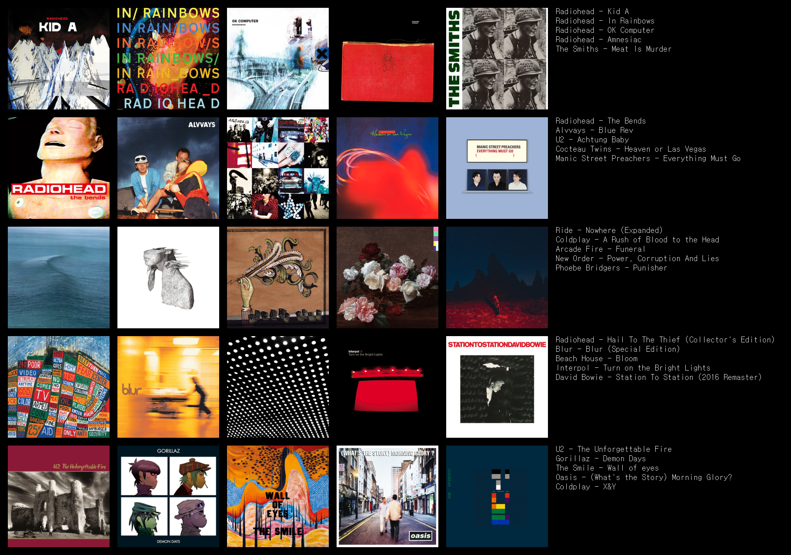

Music holds a special place in everyone’s life—it can mean relaxation, inspiration, or even a form of self-expression. Who is your favorite artist? What genre speaks to your soul? At PYM, we’re here to enhance your music experience. Whether you're a fan of classical, pop, rock, jazz, or any other genre, we aim to guide you into a deeper, more enjoyable world of music.
With PYM, you can plan, review, and discover the lasting joy of music.